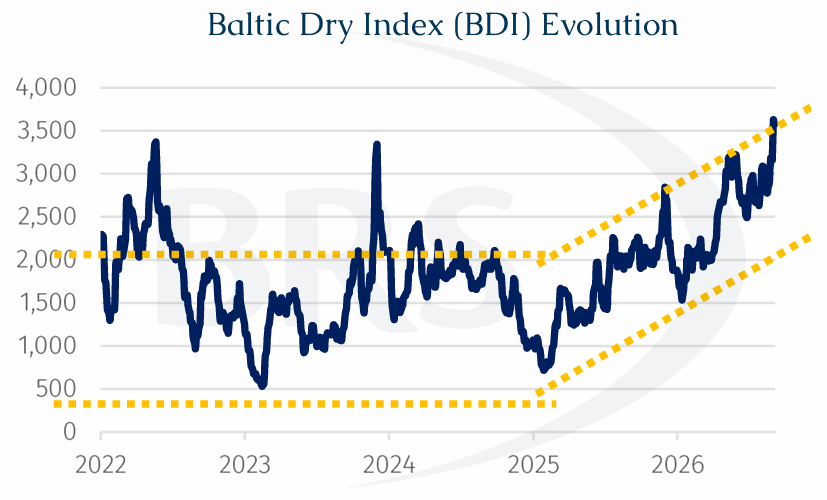
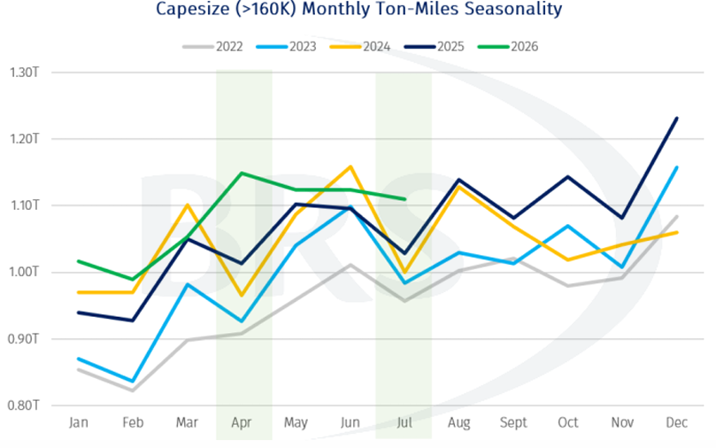
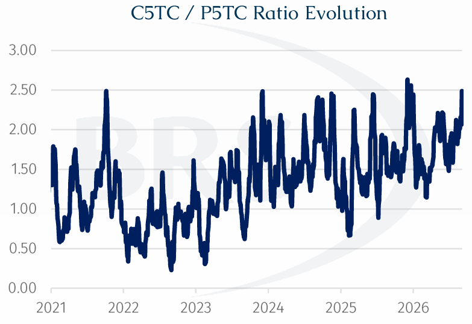
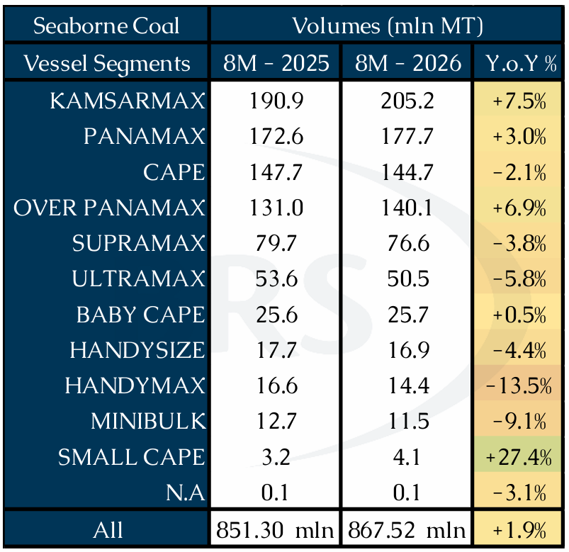
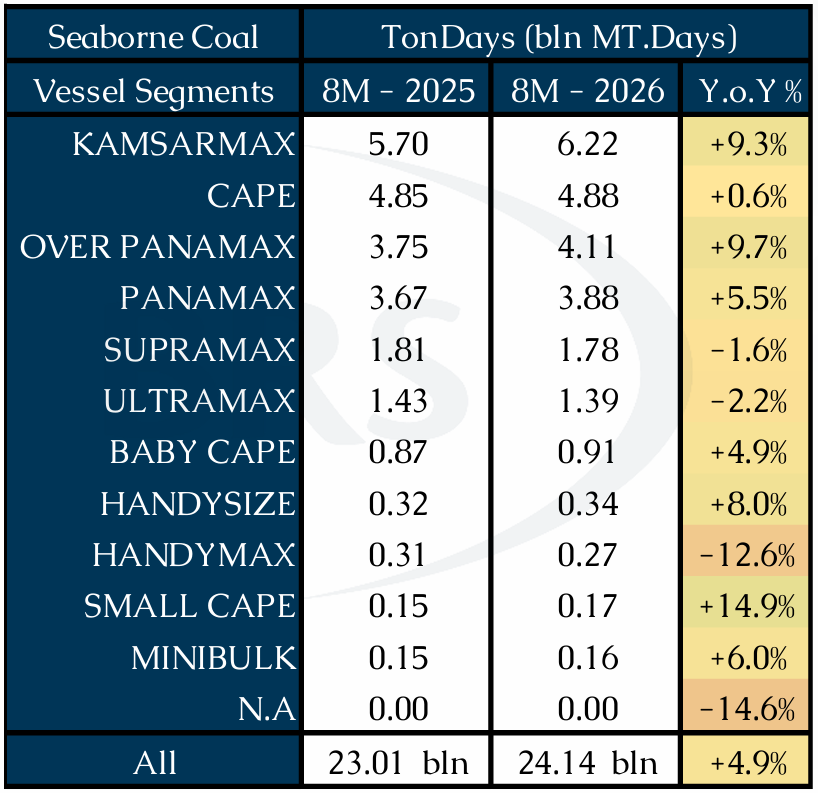
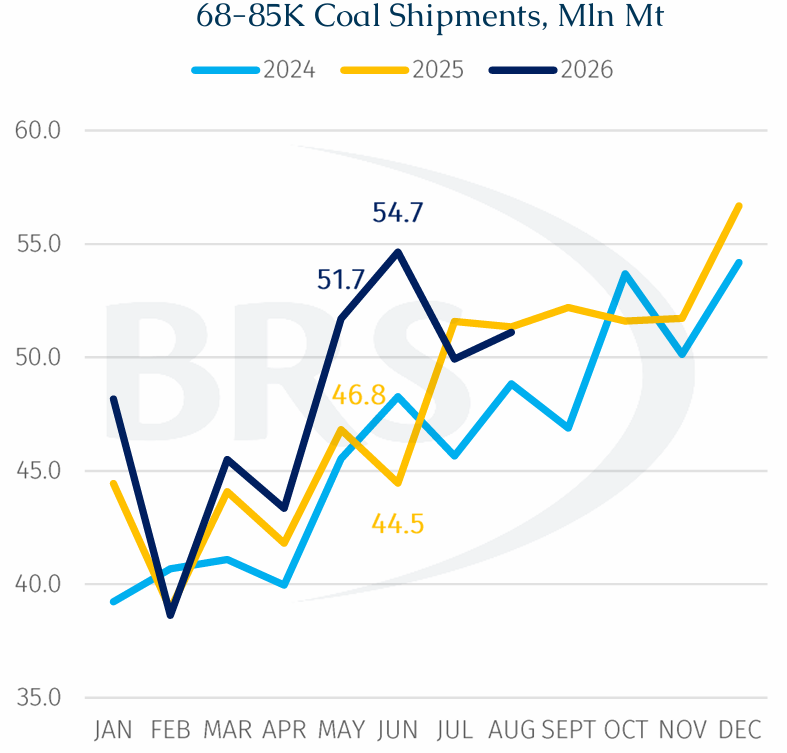
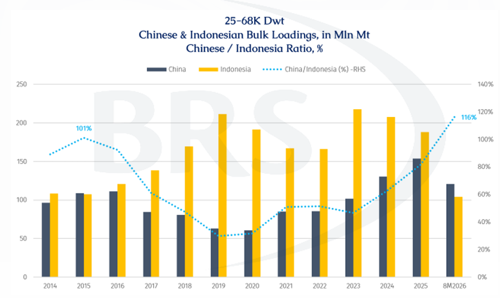

The Baltic Dry Index (BDI) has been highly volatile since 2022, repeatedly swinging between roughly 500 and above 2,000 points, but the underlying trend has turned markedly firmer since the 2025 trough.
With less than four months remaining in 2026, dry bulk shipping has delivered a more than satisfactory year-to-date performance. Broad-based strength across the major vessel segments has kept the BDI, comprising the BCI Capesize (40%), BPI Panamax (30%) and BSI Supramax (30%) indices, around, and at times, above the 3,000-point level in recent months. As of last Friday, the BDI was trading north of 3,500 points, marking the strongest sustained upswing of the post-Covid era.

Much of the rally has understandably been attributed to disruptions affecting global shipping, from the Strait of Hormuz to congestion at the Panama Canal. In this issue, however, we look at some of the quieter supporting factors and market actors across the three main vessel segments that have helped sustain the rally and made 2026, so far an exceptional year for dry bulk freight.
Capesize (>160K Dwt) – What Seasonal Lulls?
According to AXSMarine data, year-to-date ton-miles for vessels above 160,000 dwt have far exceeded previous years, while 2026 has also broken from typical seasonal patterns.

In particular, the usual April and July ton-mile corrections failed to materialise, pointing to a more persistent underlying demand base. This strength allowed the C5TC (basis 180,000 dwt) to average around $40,000/day in August.
Part of that resilience has come from changing iron ore trade. AXSMarine data show Guinean iron ore shipments reached 10.0 mln mt across the first eight months of 2026, versus virtually none in 2025, with the country’s first shipment only commencing last November and further growth expected through 2027–28. Together with rising exports from Sierra Leone and Liberia, at 9.2 mln mt and 10.7 mln mt respectively, West African iron ore shipments have now overtaken those from South Africa. This is increasing the region’s importance as a source of long-haul Capesize employment, particularly given the greater sailing distances to Asian buyers.
Further upside could come from Simandou. The arrival ofWONTANARA, the first of five purpose-built transshipment vessels for SimFer, should ease logistical constraints as exports gather pace. Designed for shallow-water operations, it can shuttle more than 40,000 mt of ore per voyage from Morebaya to ocean-going bulkers offshore, while its dual-boom self-discharging system can transfer up to 12,000 mt/hr. As the remaining four vessels enter service, the additional capacity should help SimFer progressively scale up exports. Guinea’s high-grade ore also offers China another premium source as it diversifies procurement beyond established Australian and Brazilian producers.
Meanwhile, Chinese iron ore imports continue to outpace crude steel production, which is expected to remain below 980 mln mt this year. Port inventories have consequently stayed above 160 mln mt, with much of the 2026 build attributable to Australian-origin cargoes despite commercial issues surrounding selected BHP products. Australian shipments to China have been broadly flat y-o-y but have held their ground, with Atlantic Basin suppliers failing to materially displace volumes.
Against this backdrop, Capesize enters late 3Q26 at a relatively high freight-rate floor, just as Pacific typhoon activity typically becomes more disruptive to port operations. Resulting delays and vessel inefficiencies could further tighten effective tonnage availability.
Adding to near-term sentiment, Beijing is injecting RMB 300 billion into major banks and insurers, bringing cumulative government capital support since early 2025 to around RMB 500 billion. While primarily a financial-sector measure, it reinforces broader efforts to sustain credit growth and economic activity as momentum slows.
Collectively, these developments supported the September 2026 C5TC FFA contract above $54,000/day by early September, while lifting confidence in the longer-dated curve, with Cal2027 and Cal2028 contracts approaching $35,000/day and $30,000/day, respectively before the sell-off this week.
Panamax (68-85K Dwt) – Coal Strikes Back
As Capesize availability is increasingly absorbed by lucrative ore routes, coal cargoes that might otherwise compete for larger tonnage can spill down into mid-sized segments. With the C5TC/P5TC earnings ratio recently approaching 2.5x, near the upper end of its post-2021 range, charterers have a stronger incentive to avoid scarce or expensive Capesize tonnage where cargo flexibility permits, including by splitting stems into smaller parcels.

Across January - August, Kamsarmax (79-85K Dwt) coal volumes rose 7.5% y-o-y to 205.2 mln mt, while Panamax (68-79K Dwt) volumes increased 3.0% to 177.7 mln mt. Combined, the two segments carried 382.9 mln mt, up 19.50 mln mt, or 5.4%, materially outpacing the 1.9% increase in total seaborne coal shipments. This contrasts with a 2.1% decline in Capesize coal volumes to 144.65 mln mt, while Overpanamax (85-100K Dwt) volumes rose 6.9% to 140.09 mln mt. The divergence is even clearer on a ton-day basis: Kamsarmax increased 9.3% to 6.22 bln mt-days and Panamax 5.5% to 3.88 bln mt-days, taking their combined growth to 7.8% y-o-y, versus 4.9% for the overall coal market.


The monthly trend reinforces this shift. 68–85K dwt coal shipments rose from 38.6 mln mt in February to 54.7 mln mt in June, up 41.7%, with y-o-y growth accelerating from 3.8% in April to 10.5% in May and 22.9% in June. The May–June surge coincided with higher gas prices, stronger cooling demand, weaker hydropower in parts of Asia and temporary Chinese mine disruptions, providing an additional cyclical boost to seaborne coal demand. This occurred simultaneously with US Gulf grain shipments to China bypassing both the Panama and Suez canals, further tightening mid-sized vessel availability on longer-haul routes.

Geared (25-68K Dwt) – Shifts in Pacific
For much of the past decade, Indonesia, predominantly through coal, was the dominant Pacific employment generator for 25–68K dwt bulkers. China, increasingly supported by steel exports, has rapidly closed the gap. Indonesia’s lead narrowed from 148.2 mln mt in 2019 to 34.3 mln mt in 2025, with Chinese shipments rising from 30% to 82% of Indonesian volumes. Across January - August, China moved ahead altogether, shipping 120.9 mln mt versus Indonesia’s 104.0 mln mt, equivalent to 116% of Indonesian volumes.

For shipping, the more important implication may be geographical rather than simply volumetric. Indonesia sits at the southern end of the Pacific trading system, while China sits in the Far East. A deeper ex-China cargo base gives geared vessels completing voyages in North Asia more opportunities to triangulate through China, NoPac or Southeast Asia, reducing the need to ballast south towards Indonesia for their next employment.
Meanwhile, Russia is adding to this Far East cargo base. Russian Railways (RZD) coal flows into Far Eastern ports have held around 9–10 mln mt per month, reaching 9.8 mln mt in July, up 12.7% y-o-y. Continued investment in the Eastern Polygon and export infrastructure, including the Elga railway and Pacific coal terminal, should gradually add capacity for eastbound seaborne flows.
Further south, Vietnam provides another link. Geared coal shipments into Vietnam reached 7.46 mln mt in 8M26, with Indonesia supplying 5.35 mln mt, or 71.7%, and Russia 1.18 mln mt, or 15.9%. Together, they accounted for 87.6% of Vietnam’s geared coal inflows, underscoring its role as a discharge market for Russian Far East coal from the north and Indonesian coal from the south.
Across the North Pacific, geared cargo generation has also strengthened, led by agriculture. Canada and US grain and agriproduct loadings on 25–68K dwt vessels reached 20.89 mln mt in 8M26, up 23.0% y-o-y, versus 4.8% growth in overall NoPac loadings. Agricultural cargoes consequently accounted for 47.3% of geared NoPac shipments, up from 40.2% a year earlier.
The strength is consistent with improving North American grain export competitiveness, supported by ample crop availability and stronger Asian buying. China remains the key variable for US agribulk trade, particularly if quality concerns over its domestic corn crop increase the use of alternative feed grains such as sorghum and barley.
This is particularly relevant given China’s commitment to purchase at least $17 billion annually in US agricultural products through 2028, on top of its soybean commitments. Corn and sorghum could therefore be key beneficiaries, having historically ranked among the highest-value US agricultural exports to China outside soybeans.
Taken together, these shifts point to a more geographically balanced Pacific cargo base for geared bulkers, with growing employment across China, the Russian Far East and NoPac complementing the traditional Indonesia-centred trade.